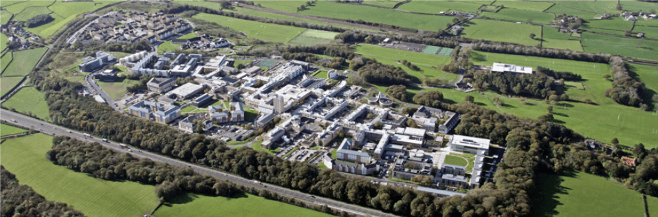

University Campus
Located on a beautiful campus in the North West of England, the University places great emphasis on a strong student experience and employability and gives students access to academics who are experts in their field. Lancaster is one of only a handful of universities with a collegiate system which has helped to forge a strong sense of identity and loyalty, and continues to be a distinctive feature of student life at Lancaster. Students from one hundred countries make up a thriving community based around our nine colleges, creating a culturally diverse campus in a location that boasts the combination of city, coast and countryside.
Read More
Facts and Figures
Students at Lancaster University are among the most satisfied in the UK according to the 2015 National Student Survey, in which the University achieved 91% on the overall satisfaction score, placing it firmly amongst the top 10 UK universities. Summer 2011 saw the opening of our brand new £20m Sports Centre, ranked sixth in the THE Student Experience Survey 2015. 97% of Lancaster University graduates have gone into work or further study within six months of graduating. As one of the few collegiate universities in the UK we welcome each student to one of our colleges on campus. In addition to our eight undergraduate colleges, we have one dedicated to our postgraduate students.Read More